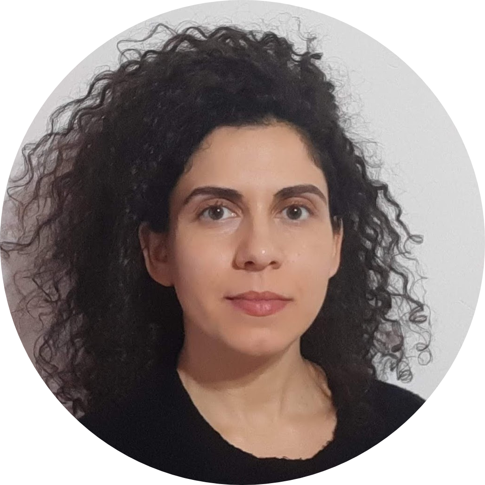
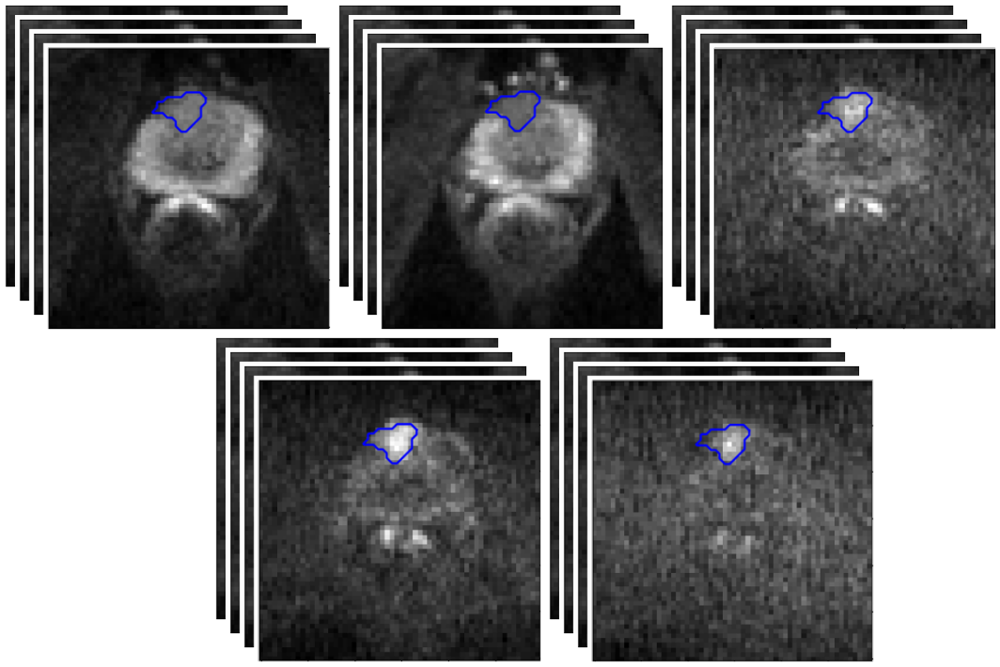

Eleni Chiou

Ph.D. Student
Department of Computer Science
University College London
Email: eleni.chiou.17 at ucl.ac.uk
Department of Computer Science
University College London
Email: eleni.chiou.17 at ucl.ac.uk
About me
I am a Ph.D. student in the Department of Computer Science, at University College London advised by Eleftheria Panagiotaki and Iasonas Kokkinos. My research interests are in the areas of Deep Learning, Computer Vision and Medical Image Analysis.
A major part of my work focuses on the development of robust and data-efficient deep learning methods for image segmentation. The proposed methods facilitate knowledge transfer across different domains to improve generalization in settings where there is limited supervision for the domain of interest.
I received my Diploma from the School of Electrical & Computer Engineering at the Technical University of Crete and my MSc degree in Biomedical Engineering from the Technical University of Denmark (DTU).
Research
Synthetic Q-Space Learning with Deep Regression Networks for Prostate Cancer Characterisation with R-VERDICT
V. Valindria, M. Palombo, E. Chiou, S. Singh, S. Punwani, E. Panagiotaki
IEEE International Symposium on Biomedical Imaging (ISBI), 2021
V. Valindria, M. Palombo, E. Chiou, S. Singh, S. Punwani, E. Panagiotaki
IEEE International Symposium on Biomedical Imaging (ISBI), 2021
 Harnessing Uncertainty in Domain Adaptation for MRI Prostate Lesion Segmentation
Harnessing Uncertainty in Domain Adaptation for MRI Prostate Lesion Segmentation
E. Chiou, F. Giganti, S. Punwani, I. Kokkinos and E. Panagiotaki
International Conference on Medical Image Computing and Computer Assisted Intervention (MICCAI), 2020
arxiv/code
Domain Adaptation for Prostate Lesion Segmentation on VERDICT-MRI
E. Chiou, F. Giganti, S. Punwani, I. Kokkinos and E. Panagiotaki
International Society for Magnetic Resonance in Medicine (ISMRM), 2020
E. Chiou, F. Giganti, S. Punwani, I. Kokkinos and E. Panagiotaki
International Society for Magnetic Resonance in Medicine (ISMRM), 2020

Automatic Classification of Benign and Malignant Prostate Lesions: A Comparison Using VERDICT-MRI and ADC Maps
E. Chiou, F. Giganti, S. Punwani, I. Kokkinos and E. Panagiotaki
International Society for Magnetic Resonance in Medicine (ISMRM), 2019
E. Chiou, F. Giganti, S. Punwani, I. Kokkinos and E. Panagiotaki
International Society for Magnetic Resonance in Medicine (ISMRM), 2019
Prostate Cancer Classification on VERDICT DW-MRI Using Convolutional Neural Networks
E. Chiou, F. Giganti, S. Punwani, I. Kokkinos and E. Panagiotaki
International Workshop on Machine Learning in Medical Imaging (MLMI), 2018
E. Chiou, F. Giganti, S. Punwani, I. Kokkinos and E. Panagiotaki
International Workshop on Machine Learning in Medical Imaging (MLMI), 2018
Spatial Filter Feature Extraction Methods for P300 BCI Speller: A Comparison
E. Chiou, S. Puthusserypady
IEEE International Conference on Systems, Man, and Cybernetics (SMC), 2016 (Oral)
E. Chiou, S. Puthusserypady
IEEE International Conference on Systems, Man, and Cybernetics (SMC), 2016 (Oral)